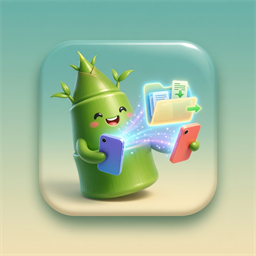

名称
大小
类型
{{name}}
{{size}}
{{type}}

局域网里传文件，不走公网，不用注册
局域网里的其他人会看到它
同一 Wi-Fi 下打开即可互相发现。路由器请关闭 AP 隔离。
扫描中… 同一 Wi-Fi 下打开小竹分享即可被发现
已选 0 项
点选一台在线设备，对方确认后开始传输
没有看到对方？
确认同一 Wi-Fi，且路由器未开 AP 隔离
同一批文件支持断点续传，中断后再次发送会接着传。
3 个项目
共 189.6 MB
对方没有接受这批文件
正在发送
192.168.1.8
42%
86.4 MB / 189.6 MB
42.1 MB/s · 剩余约 3 秒
同批文件可断点续传。
当前文件
假期视频.mp4
已发送到「客厅电脑」
身份
名字
接收目录
接收文件保存到
安卓默认可用系统下载目录下的「小竹分享」；也可选择其他内部存储文件夹。
存储权限
—
关于
小竹分享 · 局域网文件传输
收到分享
厅客厅电脑 想要向你发送文件
此页使用模块脚本，用文件地址打开不会运行。在这个目录执行 python -m http.server，再用浏览器打开给出的地址。